沪深300股指涨跌预测
利用LogisticRegression、RandomForest等机器学习的分类模型对沪深300股指的涨跌情况进行预测。股指数据由tushare提供的API获取，采集了2009-2017年的股指数据，包括股指和成交量。采用前5天的股指和成交量数据预测明日股指的涨跌情况，最终，准确率为56.8%。
数据采集
使用tushare采集国内股票数据，tushare是python的第三方库，功能类似pandas的DataReader，不过目前只支持对国内股票及一些经济数据的获取。使用pymyql与mysql进行交互，由于数据量小，也存储为CSV方便个人使用。
数据分析及模型构建
tushare提供的数据质量还可以，基本无缺失值。下面主要使用python的数据分析及建模第三方库包括，pandas、numpy、scipy、sklearn，以及可视化的matplotlib和seaborn。
import pandas as pd
import numpy as np
import matplotlib.pyplot as plt
import seaborn as sns
sns.set(style="whitegrid", palette="muted", font_scale=1.0, color_codes=True, context="talk")
%matplotlib inline
from matplotlib.font_manager import FontProperties
font = FontProperties(fname=r"/usr/share/fonts/truetype/arphic/ukai.ttc")
import sys
reload(sys)
sys.setdefaultencoding('utf-8')
import datetime
from scipy import stats
读入数据
si = pd.read_csv("../linear_regression_20171018/stock_index_all_2008_2017.csv",
parse_dates=True, index_col="sdate")
si.head(3)
| sindex | open | close | high | low | volume | price_change | p_change | |
|---|---|---|---|---|---|---|---|---|
| sdate | ||||||||
| 2010-06-02 | cyb | 967.609 | 997.119 | 997.12 | 952.61 | 1074627.0 | NaN | NaN |
| 2010-06-03 | cyb | 1002.355 | 998.394 | 1026.70 | 997.77 | 1616805.0 | NaN | NaN |
| 2010-06-04 | cyb | 989.681 | 1027.681 | 1027.68 | 986.50 | 1500295.0 | NaN | NaN |
si_pv = si.pivot_table(index=si.index, columns="sindex")
si_close = si_pv["close"]
si_close.head(3)
| sindex | cyb | hs300 | sh | sz | sz50 | zxb |
|---|---|---|---|---|---|---|
| sdate | ||||||
| 2008-01-02 | NaN | 5385.10 | 5272.81 | 17856.2 | 4219.69 | 6400.808 |
| 2008-01-03 | NaN | 5422.03 | 5319.86 | 17911.3 | 4230.42 | 6421.972 |
| 2008-01-04 | NaN | 5483.65 | 5361.57 | 18122.4 | 4282.69 | 6387.947 |
2009-2017各大股指的走势，其中sh代表沪市，sz代表深市，cyb代表创业板，hs300是沪深300，即分析的对象。
si_close.plot(figsize=(10,8))
plt.title(u"2009-2017各股指变化", fontsize=20, fontproperties=font)
<matplotlib.text.Text at 0x7fe6dc647d50>
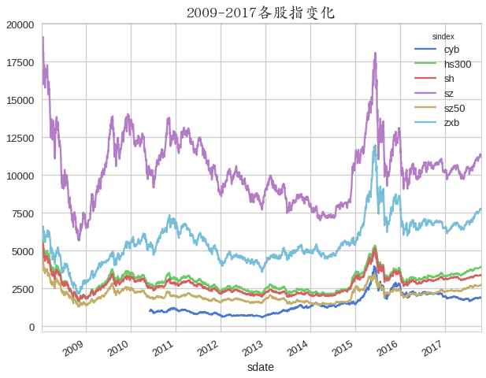
选择沪深300(hs300)为预测分析对象
hs = si[si["sindex"].str.contains("hs300", regex=True)] # (1893, 8)
hs.drop(["price_change", "p_change"], axis=1, inplace=True)
hs.head(3)
| sindex | open | close | high | low | volume | |
|---|---|---|---|---|---|---|
| sdate | ||||||
| 2008-01-02 | hs300 | 5349.76 | 5385.10 | 5404.93 | 5283.45 | 45668700.0 |
| 2008-01-03 | hs300 | 5381.15 | 5422.03 | 5422.67 | 5315.95 | 64645900.0 |
| 2008-01-04 | hs300 | 5430.63 | 5483.65 | 5499.08 | 5422.46 | 51746400.0 |
2009-2017沪深300的指数及成交量信息
fig, ax = plt.subplots(figsize=(15,12))
hs[["open", "close", "high", "low"]].plot(ax=ax)
hs["volume"].plot(secondary_y=True, ax=ax, label="volume", legend=True)
plt.title(u"2009-2017沪深300指数与成交量(右测y轴)", fontsize=20, fontproperties=font)
<matplotlib.text.Text at 0x7fe6dc387e50>
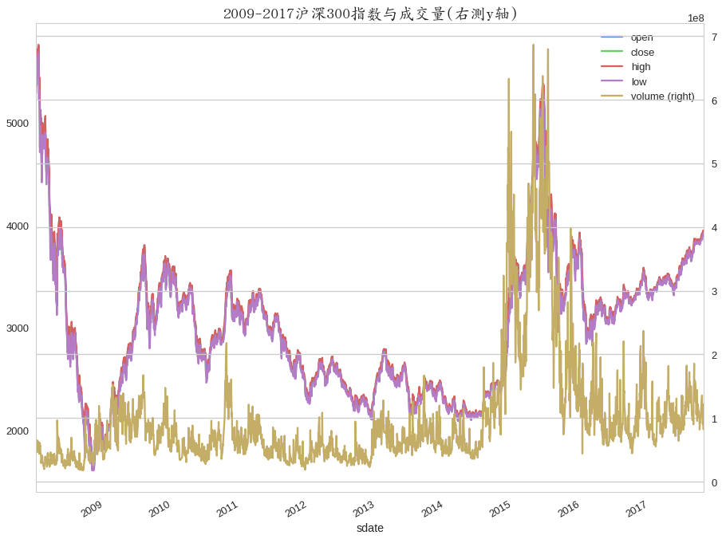
提取特征
from techFeature import StockFeature
sf = StockFeature(hs)
stock_tech_fea = sf.extract_stock_fea()
stock_tech_fea.shape
(2383, 59)
stock_tech_fea.head(2)
| Volume | pct_change | Lag5 | Lag10 | Lag20 | Lag30 | Lag60 | high_pctchange | low_pctchange | volume_pctchange | ... | bbands_upper | bbands_lower | roc | macd_dif | macd_dea | kdj_k | kdj_d | rsi | obv | rsv9 | |
|---|---|---|---|---|---|---|---|---|---|---|---|---|---|---|---|---|---|---|---|---|---|
| sdate | |||||||||||||||||||||
| 2008-01-02 | 45668700.0 | NaN | NaN | NaN | NaN | NaN | NaN | NaN | NaN | NaN | ... | NaN | NaN | NaN | 0.000000 | 0.00000 | 83.676325 | 83.676325 | NaN | NaN | NaN |
| 2008-01-03 | 64645900.0 | 0.685781 | NaN | NaN | NaN | NaN | NaN | 0.328219 | 0.615128 | 41.554062 | ... | NaN | NaN | NaN | 0.828558 | 0.46031 | 93.194708 | 89.387355 | 100.0 | NaN | NaN |
2 rows × 59 columns
使用前5日股指数据预测今日股指的涨跌情况
rolling_window = 5
roll_tack = stock_tech_fea.copy()
roll_tack.drop(["pct_change"], axis=1, inplace=True)
rollfmean = roll_tack.rolling(rolling_window, min_periods=rolling_window).mean()
rollfmean.columns = rollfmean.columns.map(lambda x: x + "_mean{}".format(rolling_window))
rollf = rollfmean
rollf = rollf.shift(1) # 第6天的特征为前5天的均值，用此均值预测第6天的指数
rollf["close"] = hs["close"]
rollf["direction"] = hs["close"].diff() > 0
rollf["direction"] = rollf["direction"].astype(np.int)
rollf["pct_change"] = rollf["close"].pct_change() * 100
rollf.dropna(how="any", inplace=True)
rollf.shape
(2180, 61)
stock_tar = rollf[["direction", "close", "pct_change"]]
stock_fea = rollf.drop(["direction", "close"], axis=1)
stock_fea.shape
(2180, 59)
数据初探索
fig, ax = plt.subplots(figsize=(10,8))
stock_tar["pct_change"].plot(ax=ax)
plt.ylabel('pct_change [%]', fontsize=16)
plt.xlabel('')
plt.title(u"2009-2017沪深300涨跌幅(%)", fontsize=20, fontproperties=font)
<matplotlib.text.Text at 0x7fe6dc1fab10>
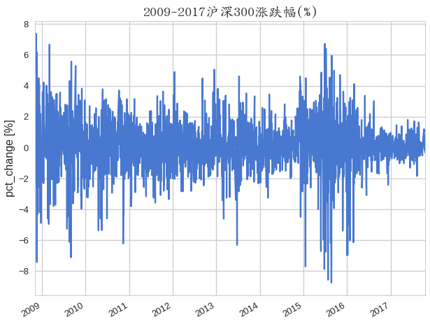
plt.figure(figsize=(8,6))
fig = sns.distplot(stock_tar["pct_change"],kde=True, vertical=False, color="purple")
sns.despine(top=True)
plt.yticks(fig.get_yticks(), fig.get_yticks() * 100)
plt.ylabel('Distribution [%]', fontsize=16)
# plt.xticks(range(0, 100, 10))
plt.gca().yaxis.grid(True, linestyle = "-.")
plt.gca().xaxis.grid(True, linestyle = "-.")
plt.xlabel(u"pct_change %", fontsize=16, fontproperties=font)
plt.title(u"2009-2017沪深300涨跌幅分布", fontsize=20, fontproperties=font)
<matplotlib.text.Text at 0x7fe6dc1247d0>
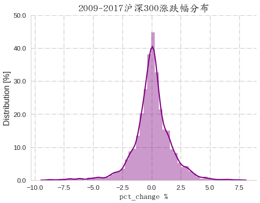
updown = stock_tar["direction"].value_counts()
updown.rename({1: "up", 0: "down"}, inplace=True)
updown
up 1153
down 1027
Name: direction, dtype: int64
plt.figure(figsize=(8,6))
g=sns.barplot(x=updown.index, y=updown)
plt.yticks(g.get_yticks(), fontproperties=font, fontsize=16)
plt.ylabel("")
plt.xlabel("")
plt.title(u"2009-2017沪深300上涨与下跌次数", fontsize=20, fontproperties=font)
plt.gca().yaxis.grid(True, linestyle = "--")
plt.legend(loc=7,prop=font, fontsize=12)
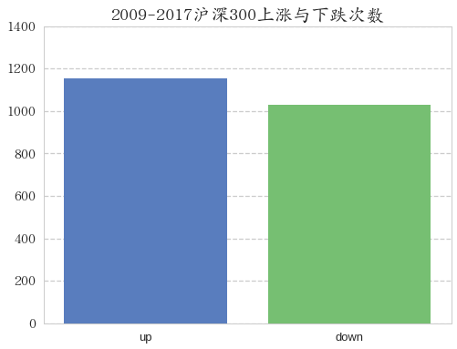
fig, ax = plt.subplots(figsize=(10,8))
stock_tar["close"].plot(ax=ax)
plt.ylabel('close', fontsize=16)
plt.xlabel('')
plt.gca().yaxis.grid(True, linestyle = "-.")
plt.gca().xaxis.grid(True, linestyle = "-.")
plt.xticks(plt.gca().get_xticks(), fontproperties=font, fontsize=16, rotation=-10)
plt.title(u"2009-2017沪深300指数(close)", fontsize=20, fontproperties=font)
<matplotlib.text.Text at 0x7fe6d7e2ae10>
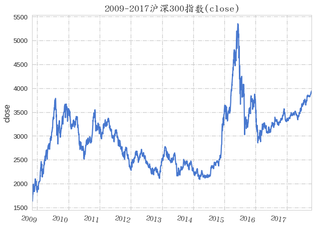
特征筛选
stock_fea.describe()
| Volume_mean5 | Lag5_mean5 | Lag10_mean5 | Lag20_mean5 | Lag30_mean5 | Lag60_mean5 | high_pctchange_mean5 | low_pctchange_mean5 | volume_pctchange_mean5 | close_roll_5_max_mean5 | ... | bbands_lower_mean5 | roc_mean5 | macd_dif_mean5 | macd_dea_mean5 | kdj_k_mean5 | kdj_d_mean5 | rsi_mean5 | obv_mean5 | rsv9_mean5 | pct_change | |
|---|---|---|---|---|---|---|---|---|---|---|---|---|---|---|---|---|---|---|---|---|---|
| count | 2.180000e+03 | 2180.000000 | 2180.000000 | 2180.000000 | 2180.000000 | 2180.000000 | 2180.000000 | 2180.000000 | 2180.000000 | 2180.000000 | ... | 2180.000000 | 2180.000000 | 2180.000000 | 2180.000000 | 2180.000000 | 2180.000000 | 2180.000000 | 2180.000000 | 2180.000000 | 2180.000000 |
| mean | 1.051363e+08 | 0.047027 | 0.045278 | 0.040162 | 0.039932 | 0.025105 | 0.046647 | 0.051635 | 2.817522 | 3001.432072 | ... | 2671.912434 | 0.002508 | 5.702102 | 5.458203 | 216.317641 | 215.893160 | 52.071582 | 0.098248 | 0.548319 | 0.052583 |
| std | 9.073317e+07 | 0.739807 | 0.740489 | 0.749253 | 0.759714 | 0.773778 | 0.700605 | 0.745852 | 8.150535 | 625.057884 | ... | 522.791151 | 0.030531 | 64.431823 | 61.520109 | 147.532372 | 134.627519 | 12.195386 | 0.474311 | 0.324709 | 1.616292 |
| min | 2.183633e+07 | -4.838902 | -4.838902 | -4.838902 | -4.838902 | -4.838902 | -4.809132 | -4.497514 | -18.049664 | 1696.796000 | ... | 1531.647649 | -0.177860 | -276.353443 | -228.492467 | 35.838216 | 44.991503 | 20.020866 | -1.205182 | 0.000000 | -8.747918 |
| 25% | 5.559608e+07 | -0.349020 | -0.354861 | -0.364369 | -0.365298 | -0.385432 | -0.322148 | -0.336338 | -2.603190 | 2468.555500 | ... | 2232.523107 | -0.013679 | -26.673772 | -24.789436 | 107.145448 | 116.632821 | 42.578688 | -0.220874 | 0.246982 | -0.642415 |
| 50% | 7.885951e+07 | 0.058455 | 0.057390 | 0.057390 | 0.057687 | 0.047854 | 0.042348 | 0.077093 | 1.765310 | 3026.933000 | ... | 2620.764469 | 0.002935 | 5.721931 | 6.163226 | 181.459137 | 186.569701 | 52.341211 | 0.143482 | 0.584226 | 0.070339 |
| 75% | 1.128905e+08 | 0.462984 | 0.462984 | 0.464625 | 0.466388 | 0.466889 | 0.434130 | 0.484127 | 7.137630 | 3403.722300 | ... | 3083.151534 | 0.019482 | 34.422847 | 31.596202 | 282.154487 | 276.511020 | 60.152680 | 0.407017 | 0.859472 | 0.789530 |
| max | 5.827038e+08 | 3.024969 | 3.024969 | 3.024969 | 3.340340 | 3.340340 | 2.870094 | 3.103424 | 59.134120 | 5353.750000 | ... | 4308.229635 | 0.114338 | 230.638543 | 219.278724 | 1147.655035 | 1084.400053 | 90.298874 | 1.416612 | 1.000000 | 7.380962 |
8 rows × 59 columns
def corr_plot(dataframe, plot_title=None, method='pearson', figsize=(20, 15)):
si_corr = dataframe.corr(method=method)
siname = si_corr.columns.values
plt.figure(figsize=figsize)
g = sns.heatmap(si_corr, cbar=True, annot=True,
square=True, fmt=".2f",
annot_kws={'size': 12},
yticklabels=siname,xticklabels=siname)
plt.yticks(g.get_yticks(), fontproperties=font, fontsize=20)
plt.xticks(g.get_xticks(), fontproperties=font, fontsize=20)
plt.xlabel("")
plt.ylabel("")
plt.xticks(g.get_xticks(), fontproperties=font, fontsize=20, rotation=75)
plt.title(plot_title + "_" + method, fontproperties=font, fontsize=25)
corr_plot(stock_fea, plot_title=u"沪深300特征间相关关系")
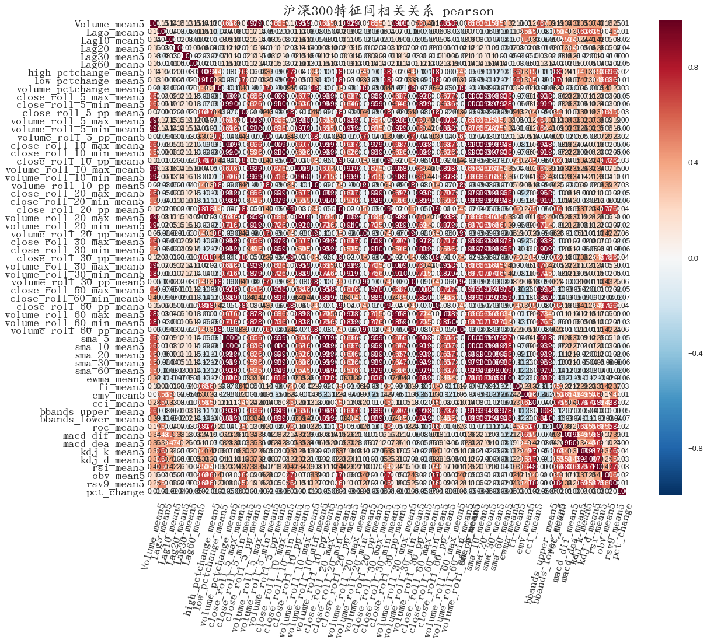
corr_plot(stock_fea, plot_title=u"沪深300特征间相关关系", method="spearman")
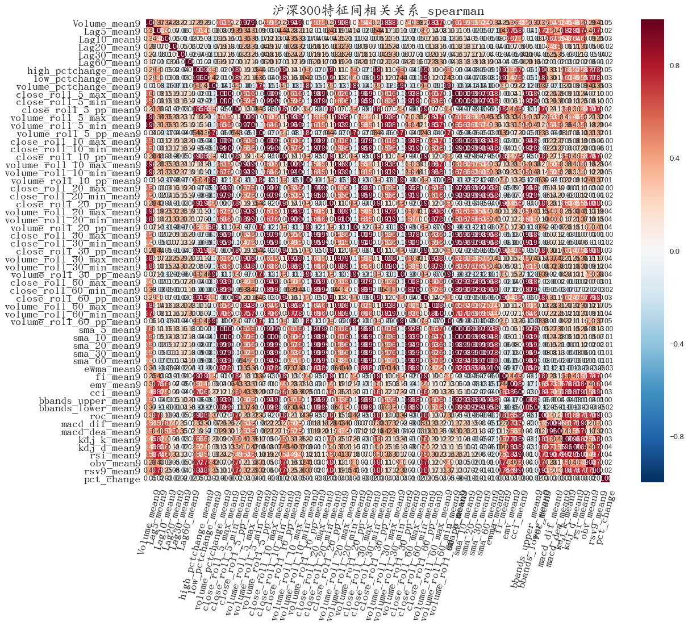
from sklearn.preprocessing import StandardScaler
from sklearn.preprocessing import MinMaxScaler
from sklearn.model_selection import train_test_split
from sklearn.model_selection import cross_val_score
from sklearn.model_selection import learning_curve
from sklearn.model_selection import GridSearchCV
from sklearn.feature_selection import RFE
from sklearn.linear_model import RandomizedLasso
from sklearn.linear_model import Ridge
from sklearn.linear_model import Lasso
from sklearn.linear_model import LinearRegression
from sklearn.linear_model import RandomizedLogisticRegression
from sklearn.linear_model import LogisticRegression
from sklearn.ensemble import RandomForestClassifier
from sklearn.ensemble import ExtraTreesClassifier
from sklearn.ensemble import AdaBoostClassifier
from sklearn.ensemble import BaggingClassifier
from sklearn.metrics import accuracy_score, f1_score
from sklearn.metrics import f1_score
from sklearn.metrics import classification_report
from sklearn.metrics import confusion_matrix
from sklearn.metrics import mean_squared_error
from sklearn.metrics import r2_score
from sklearn.pipeline import Pipeline
from sklearn.tree import DecisionTreeClassifier
from sklearn.ensemble import VotingClassifier
from sklearn import svm
train_num = int(len(stock_fea) * 0.9)
if "pct_change" in stock_fea.columns:
stock_fea.drop("pct_change", inplace=True, axis=1)
X = stock_fea.copy()
y_classification = stock_tar["direction"]
y_regression = stock_tar["close"]
sc = StandardScaler()
sc.fit(X) # 计算均值和方差
X_std = sc.transform(X) # 进行标准变换，变成标准正态分布
def feature_select(X, y, X_std):
feature_name = X.columns.values
estimator = LogisticRegression()
selector = RFE(estimator, n_features_to_select=1, step=1)
selector = selector.fit(X_std, y)
bag = sorted(zip(feature_name, selector.ranking_, selector.support_),
key=lambda x: x[1])
fea_importance = pd.DataFrame(bag)
fea_importance.set_index(0,inplace=True)
fea_importance.drop(2, axis=1, inplace=True)
fea_importance.rename(index=str, columns={1: "RFE_Logistic"}, inplace=True)
model_dict = dict(zip(["RandomLR", "ExtraTree"], [RandomizedLogisticRegression(),
ExtraTreesClassifier(n_estimators=1000, random_state=1)]))
for i in ["RandomLR", "ExtraTree"]:
model = model_dict[i]
model.fit(X if i == "ExtraTree" else X_std, y_classification)
df_fea = pd.DataFrame(sorted(zip(feature_name,
model.feature_importances_ if i == "ExtraTree" else model.scores_),
key=lambda x: x[1], reverse=True))
df_fea.set_index(0, inplace=True)
df_fea.rename(index=str, columns={1: i}, inplace=True)
fea_importance = fea_importance.join(df_fea)
return fea_importance
fea_importance = feature_select(X, y_classification , X_std)
fea_importance
| RFE_Logistic | RandomLR | ExtraTree | |
|---|---|---|---|
| 0 | |||
| close_roll_5_min_mean5 | 1 | 0.000 | 0.014992 |
| close_roll_20_min_mean5 | 2 | 0.000 | 0.012900 |
| volume_roll_30_pp_mean5 | 3 | 0.465 | 0.022894 |
| volume_roll_10_pp_mean5 | 4 | 0.005 | 0.022125 |
| low_pctchange_mean5 | 5 | 0.000 | 0.022189 |
| high_pctchange_mean5 | 6 | 0.000 | 0.020495 |
| bbands_upper_mean5 | 7 | 0.000 | 0.013378 |
| close_roll_30_max_mean5 | 8 | 0.000 | 0.011722 |
| close_roll_60_min_mean5 | 9 | 0.000 | 0.012344 |
| bbands_lower_mean5 | 10 | 0.000 | 0.014522 |
| close_roll_30_min_mean5 | 11 | 0.000 | 0.012110 |
| volume_roll_20_min_mean5 | 12 | 0.000 | 0.013796 |
| volume_roll_10_min_mean5 | 13 | 0.000 | 0.015238 |
| close_roll_10_max_mean5 | 14 | 0.000 | 0.013887 |
| sma_30_mean5 | 15 | 0.000 | 0.013732 |
| close_roll_10_min_mean5 | 16 | 0.000 | 0.014065 |
| volume_roll_60_max_mean5 | 17 | 0.020 | 0.011409 |
| volume_roll_20_max_mean5 | 18 | 0.000 | 0.013721 |
| volume_roll_5_min_mean5 | 19 | 0.005 | 0.016882 |
| kdj_k_mean5 | 20 | 0.055 | 0.019311 |
| kdj_d_mean5 | 21 | 0.075 | 0.018454 |
| rsv9_mean5 | 22 | 0.000 | 0.019859 |
| rsi_mean5 | 23 | 0.030 | 0.018308 |
| close_roll_20_max_mean5 | 24 | 0.000 | 0.012585 |
| volume_roll_30_min_mean5 | 25 | 0.000 | 0.012333 |
| sma_20_mean5 | 26 | 0.000 | 0.014133 |
| volume_roll_30_max_mean5 | 27 | 0.000 | 0.013155 |
| volume_roll_20_pp_mean5 | 28 | 0.105 | 0.022286 |
| sma_60_mean5 | 29 | 0.000 | 0.013465 |
| close_roll_20_pp_mean5 | 30 | 0.000 | 0.020728 |
| close_roll_60_pp_mean5 | 31 | 0.000 | 0.020377 |
| close_roll_5_max_mean5 | 32 | 0.000 | 0.014565 |
| ewma_mean5 | 33 | 0.000 | 0.013391 |
| Lag60_mean5 | 34 | 0.000 | 0.022234 |
| roc_mean5 | 35 | 0.000 | 0.020028 |
| sma_5_mean5 | 36 | 0.000 | 0.014687 |
| cci_mean5 | 37 | 0.000 | 0.018813 |
| obv_mean5 | 38 | 0.000 | 0.023669 |
| volume_roll_60_min_mean5 | 39 | 0.000 | 0.012152 |
| macd_dea_mean5 | 40 | 0.000 | 0.016500 |
| Lag5_mean5 | 41 | 0.005 | 0.021485 |
| macd_dif_mean5 | 42 | 0.020 | 0.016610 |
| Lag10_mean5 | 43 | 0.000 | 0.021961 |
| Volume_mean5 | 44 | 0.015 | 0.017822 |
| volume_roll_60_pp_mean5 | 45 | 0.355 | 0.022679 |
| close_roll_10_pp_mean5 | 46 | 0.000 | 0.020859 |
| close_roll_60_max_mean5 | 47 | 0.000 | 0.011358 |
| emv_mean5 | 48 | 0.000 | 0.017818 |
| volume_roll_10_max_mean5 | 49 | 0.005 | 0.015913 |
| Lag20_mean5 | 50 | 0.000 | 0.022178 |
| close_roll_5_pp_mean5 | 51 | 0.000 | 0.020580 |
| Lag30_mean5 | 52 | 0.000 | 0.022674 |
| fi_mean5 | 53 | 0.000 | 0.019666 |
| volume_roll_5_max_mean5 | 54 | 0.000 | 0.017331 |
| volume_pctchange_mean5 | 55 | 0.015 | 0.021926 |
| close_roll_30_pp_mean5 | 56 | 0.000 | 0.020302 |
| volume_roll_5_pp_mean5 | 57 | 0.000 | 0.020994 |
| sma_10_mean5 | 58 | 0.000 | 0.014408 |
基于RFE和RandomLogistic进行特征选择
frlr = set(fea_importance.loc[fea_importance["RandomLR"] != 0, :].index.tolist())
frfe = set(fea_importance.loc[fea_importance["RFE_Logistic"] <=23, :].index.tolist())
# 此处的23是测试不同数值的特征使用logisticRegression进行分类，看训练和测试集的准确率得到的
# 对于使用RandomLR选择的特征也类似，不过由于其在0处有划分，故选择>0的
# 观察两种选择后的特征的logistic分类混淆矩阵，发现俩者有互补的趋势
choosen_features = list(frlr | frfe)
choosen_features
# len(choosen_feature) # 31
['low_pctchange_mean5',
'volume_roll_5_min_mean5',
'close_roll_5_min_mean5',
'high_pctchange_mean5',
'volume_roll_20_min_mean5',
'close_roll_30_max_mean5',
'close_roll_30_min_mean5',
'kdj_d_mean5',
'volume_roll_60_pp_mean5',
'sma_30_mean5',
'volume_pctchange_mean5',
'Lag5_mean5',
'volume_roll_10_min_mean5',
'rsv9_mean5',
'volume_roll_10_pp_mean5',
'close_roll_20_min_mean5',
'close_roll_60_min_mean5',
'kdj_k_mean5',
'volume_roll_20_pp_mean5',
'Volume_mean5',
'volume_roll_10_max_mean5',
'volume_roll_60_max_mean5',
'volume_roll_20_max_mean5',
'rsi_mean5',
'close_roll_10_min_mean5',
'volume_roll_30_pp_mean5',
'macd_dif_mean5',
'bbands_upper_mean5',
'close_roll_10_max_mean5',
'bbands_lower_mean5']
模型构建
用选出的31个特征构造的数据集进行模型训练
if "pct_change" in stock_fea.columns:
stock_fea.drop("pct_change", inplace=True, axis=1)
X_temp = stock_fea[choosen_features]
X_train = X_temp[:train_num]
X_test = X_temp[train_num:]
y_train = stock_tar["direction"][:train_num]
y_test = stock_tar["direction"][train_num:]
sc = StandardScaler()
sc.fit(X_train)
X_train_std = sc.transform(X_train)
X_test_std = sc.transform(X_test)
X_train.shape
(1962, 30)
def confusion_mplot(y_test, y_pred):
tick_labels = [u"涨",u"跌"]
confm = confusion_matrix(y_test, y_pred, labels=[1,0])
plt.figure(figsize=(4,3))
g = sns.heatmap(confm, cbar=True, annot=True,
square=True, fmt=".2f",
annot_kws={'size': 12},
yticklabels=tick_labels,xticklabels=tick_labels)
plt.yticks(g.get_yticks(), fontproperties=font, fontsize=15)
plt.xticks(g.get_xticks(), fontproperties=font, fontsize=15)
plt.ylabel(u'实际', fontproperties=font, fontsize=20)
plt.xlabel(u'预测', fontproperties=font, fontsize=20)
parameters = {'C':[150, 50, 10, 2, 1.5, 1, 0.8, 0.5, 0.3, 0.1, 0.01, 0.001, 0.0001]}
lr = LogisticRegression(penalty="l2", random_state=1, tol=1e-6)
gscv = GridSearchCV(lr, parameters)
gscv.fit(X_train_std, y_train)
gs = gscv.grid_scores_
bp = gscv.best_params_
bs = gscv.best_score_
gs
[mean: 0.53109, std: 0.01380, params: {'C': 150},
mean: 0.53007, std: 0.01243, params: {'C': 50},
mean: 0.52803, std: 0.01158, params: {'C': 10},
mean: 0.52905, std: 0.00909, params: {'C': 2},
mean: 0.53058, std: 0.00921, params: {'C': 1.5},
mean: 0.53007, std: 0.01112, params: {'C': 1},
mean: 0.53058, std: 0.01003, params: {'C': 0.8},
mean: 0.53160, std: 0.00537, params: {'C': 0.5},
mean: 0.53007, std: 0.00716, params: {'C': 0.3},
mean: 0.53262, std: 0.00529, params: {'C': 0.1},
mean: 0.53211, std: 0.00920, params: {'C': 0.01},
mean: 0.49949, std: 0.02314, params: {'C': 0.001},
mean: 0.48777, std: 0.02197, params: {'C': 0.0001}]
LogisticRegression分类模型
lrf = LogisticRegression(C = 0.01, penalty="l2", random_state=1, tol=1e-6)
lrf.fit(X_train_std, y_train)
y_pred = lrf.predict(X_test_std)
confusion_mplot(y_test, y_pred)
classification_report(y_test, y_pred)
u' precision recall f1-score support\n\n 0 0.47 0.63 0.54 101\n 1 0.54 0.38 0.44 117\n\navg / total 0.51 0.50 0.49 218\n'
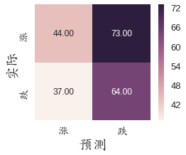
accuracy_score(y_test, y_pred)
# accuracy_score(y_train, lrf.predict(X_train_std)) # 0.5558
0.49541284403669728
RandomForest分类模型
rf = RandomForestClassifier(n_estimators=1000, random_state=24)
rf.fit(X_train, y_train)
rf_prediction_train = rf.predict(X_train)
rf_prediction_test = rf.predict(X_test)
rf_evaluate_result = classification_report(y_test, rf_prediction_test)
confusion_mplot(y_test, rf_prediction_test)
rf_evaluate_result
u' precision recall f1-score support\n\n 0 0.46 0.31 0.37 101\n 1 0.54 0.69 0.60 117\n\navg / total 0.50 0.51 0.50 218\n'
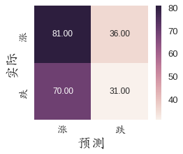
accuracy_score(y_test,rf_prediction_test)
# accuracy_score(y_train, rf.predict(X_train_std)) # 0.5224
0.51376146788990829
决策树分类模型
# 决策桩分类器性能
tree = DecisionTreeClassifier(max_depth=8)
tree.fit(X_train, y_train)
tree_pred_test = tree.predict(X_test)
tree_pred_train = tree.predict(X_train)
tree_evaluate_result = classification_report(y_test, tree_pred_test)
confusion_mplot(y_test, tree_pred_test)
tree_evaluate_result
u' precision recall f1-score support\n\n 0 0.53 0.69 0.60 101\n 1 0.64 0.46 0.53 117\n\navg / total 0.58 0.57 0.56 218\n'
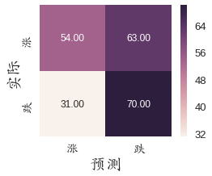
accuracy_score(y_test,tree_pred_test)
# accuracy_score(y_train,tree_pred_train) # 0.6671
0.56880733944954132
AdaBoost
# Boosting分类器性能
ada = AdaBoostClassifier(base_estimator=tree,n_estimators=1000,learning_rate=0.1, random_state=24)
ada = ada.fit(X_train, y_train)
ada_test_pred = ada.predict(X_test)
ada_evaluate_result = classification_report(y_test, ada_test_pred)
confusion_mplot(y_test, ada_test_pred)
ada_evaluate_result
u' precision recall f1-score support\n\n 0 0.46 0.28 0.35 101\n 1 0.54 0.72 0.61 117\n\navg / total 0.50 0.51 0.49 218\n'
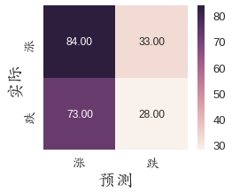
accuracy_score(y_test,ada_test_pred)
# accuracy_score(y_train, ada.predict(X_train_std)) # 0.5127
0.51376146788990829
模型融合-投票
eclf = VotingClassifier(estimators=[("lr", lrf), ('ada', ada), ('rf', rf), ("tree",tree)], voting='soft',weights=[2,1,1,1])
eclf.fit(X_train, y_train)
eclf_pred_test = eclf.predict(X_test)
eclf_pred_train = eclf.predict(X_train)
eclf_train_accu = accuracy_score(y_train, eclf_pred_train)
eclf_test_accu = accuracy_score(y_test, eclf_pred_test)
eclf_train_f1 = f1_score(y_train, eclf_pred_train)
eclf_test_f1 = f1_score(y_test, eclf_pred_test)
base_result_eclf = "train_accuracy:{1},test_accuracy:{2},train_f1:{0},test_f1:{3}".format(eclf_train_accu,eclf_test_accu,eclf_train_f1,eclf_test_f1)
eclf_evaluate_result = classification_report(y_test, eclf_pred_test)
confusion_mplot(y_test, eclf_pred_test)
eclf_evaluate_result
u' precision recall f1-score support\n\n 0 0.56 0.34 0.42 101\n 1 0.57 0.77 0.66 117\n\navg / total 0.57 0.57 0.55 218\n'
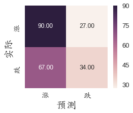
accuracy_score(y_test, eclf_pred_test)
# accuracy_score(y_train, eclf.predict(X_train_std)) # 0.5224
0.56880733944954132
eclf
VotingClassifier(estimators=[('lr', LogisticRegression(C=0.01, class_weight=None, dual=False, fit_intercept=True,
intercept_scaling=1, max_iter=100, multi_class='ovr', n_jobs=1,
penalty='l2', random_state=1, solver='liblinear', tol=1e-06,
verbose=0, warm_start=False)), ('ada', AdaBoostC... min_weight_fraction_leaf=0.0, presort=False, random_state=None,
splitter='best'))],
flatten_transform=None, n_jobs=1, voting='soft',
weights=[2, 1, 1, 1])
由LogisticRegression分类器、随机森林、Adaboost_tree、决策树构建的最终模型在测试集的准确率为56.8%，高于任何单一分类模型。 最后，用eclf.predict()就可以对新数据进行预测了。
总结
本文用2009-2017年的沪深300指数构建分类模型以预测沪深300股指明日是涨还是跌，最终，测试集的准确率为56.8%。
由于训练模型只使用了沪深300股指收市指数、成交量、一日的最高和最低值以及基于这些计算的一些常用的技术指标，即数据比较单一，没有考虑盘外的其他信息，比如期货信息、外市信息、宏观经济数据等等，同时，使用的技术指标也不全面，而且仅仅使用了5日信息，并没有考虑更长或更短时间尺度的股指信息，因此，最终的分类效果不咋地也是预料之中的事。